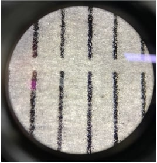
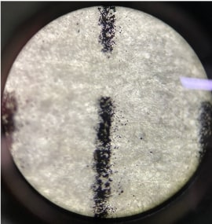
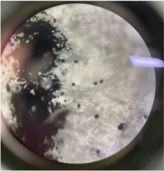

현미경 실험2
이 실험에서는 현미경 사용에 더욱 익숙해지기 위해서 자를 이용해서 40배, 100배, 400배 에서의 지름을 측정하였으며 40배의 결과 값으로 계산한 이론 값과 100배,400배의 측정 값을 비교해 보았다.
그 결과 40배에서는 5mm, 100배에서는 2mm, 400배에서는 0.5mm의 값을 측정할 수 있었으며 이는 40배의 지름으로 계산한 이론 값과 정확히 일치하였다.
실험
1. 현미경의 재물대 위에 종이 자를 올려 놓았다.
2. 40배 배율에서 미터 단위에 초점을 맞추어 mm 표시 중 하나가 시야의 왼쪽 가장자리에 오도록 맞추었다.
3. 시야의 지름을 재고 기록하였다.
4. 100배 렌즈와 400배 렌즈에서도 똑같은 방법으로 측정하였다.
5. 40배 렌즈에서 측정한 지름을 이용하여 100배, 400배 렌즈에서의 이론 값을 얻고 실제 측정한 값과 비교하였다.
6. 다음은 이론 값을 구하는 식이다.
100배 렌즈에서의 지름(mm)=\[ \frac{40배}{100배} \times {40배에서 지름\over1} \]
400배 렌즈에서의 지름(mm)=\[ \frac{40배}{400배} \times{40배에서 지름\over1} \]


